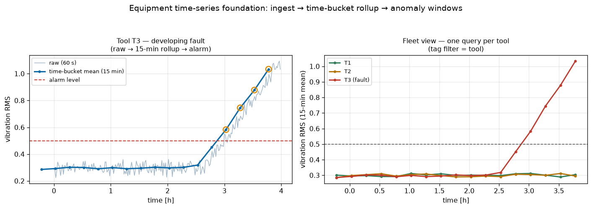

求人の「リアルタイム収集」「収集・解析基盤の設計・開発」「時系列DB(InfluxDB/PostgreSQL)」に対応する、装置センサ時系列の収集・解析基盤。常に動くSQLite(標準ライブラリ)で実装しつつ、InfluxDBのデータモデル(measurement/tags/fields/ts)とライン プロトコルを忠実に再現——同じ取込がそのまま実DB(InfluxDB/TimescaleDB)に載る設計。異常窓はRun-to-Run APCの予兆入力になる。
多装置のセンサ流(スピンドル電流・冷却水温・振動RMS)を (measurement, ts) 索引つきで取込。GROUP BY の時間バケットで15分ロールアップ(InfluxDBの aggregateWindow()・TimescaleDBの time_bucket() の移植)。ある装置(T3)に発達する故障(振動漸増)を注入すると、異常窓クエリがT3で4窓・クリーン装置で0窓を検出。左=T3の生→ロールアップ→アラーム、右=タグ(装置)フィルタでの3台フリートビュー。

# 時間バケット集計(aggregateWindow / time_bucket の移植)
SELECT (ts/900)*900 AS bucket, AVG(value), MAX(value), COUNT(*)
FROM samples WHERE sensor='vibration_rms' AND tool='T3'
GROUP BY bucket ORDER BY bucket;
# 同じ取込がそのままInfluxDBに載る(ライン プロトコル)
equipment,tool=T1,recipe=R2 spindle_current=12.00,vibration_rms=0.29 1700000000000000000この基盤は転送に依存しない。実際のファブでは以下のSEMI規格でデータが届く——どこに何が対応するかを押さえるのが要点。
| 規格 | 役割 | この基盤での対応 |
|---|---|---|
| SECS-II (E5) | 装置↔ホストのメッセージ内容(データ項目構造) | 取込するフィールドの意味 |
| HSMS (E37) | SECSをTCP/IPで運ぶ(現代の転送) | 収集経路(転送層) |
| GEM (E30) | 装置状態モデル・SV/EC/DV・収集イベント(CE)・アラーム・遠隔命令 | 収集イベント→レポート=1点の挿入、SV=sensor/value、装置/レシピ=タグ |
| EDA / Interface A (E120/125/132/134/164) | 高頻度データ収集:装置が構造を自己記述→認証・購読→データ収集計画(E134)でトレース配信 | 「リアルタイム収集→解析基盤」そのもの。E134のトレース/ロールアップ=本基盤の時間バケットクエリ |
まとめ: GEMで装置制御+イベント駆動レポート、EDA(Interface A)で高頻度トレース収集 → 時系列ストアに着地 → 時間バケットのロールアップ+異常窓 → APCへ。本モジュールは「格納・解析」の半分を、どちらのインタフェースの背後にも差せる形で実装。出所:disco_tsdb/。